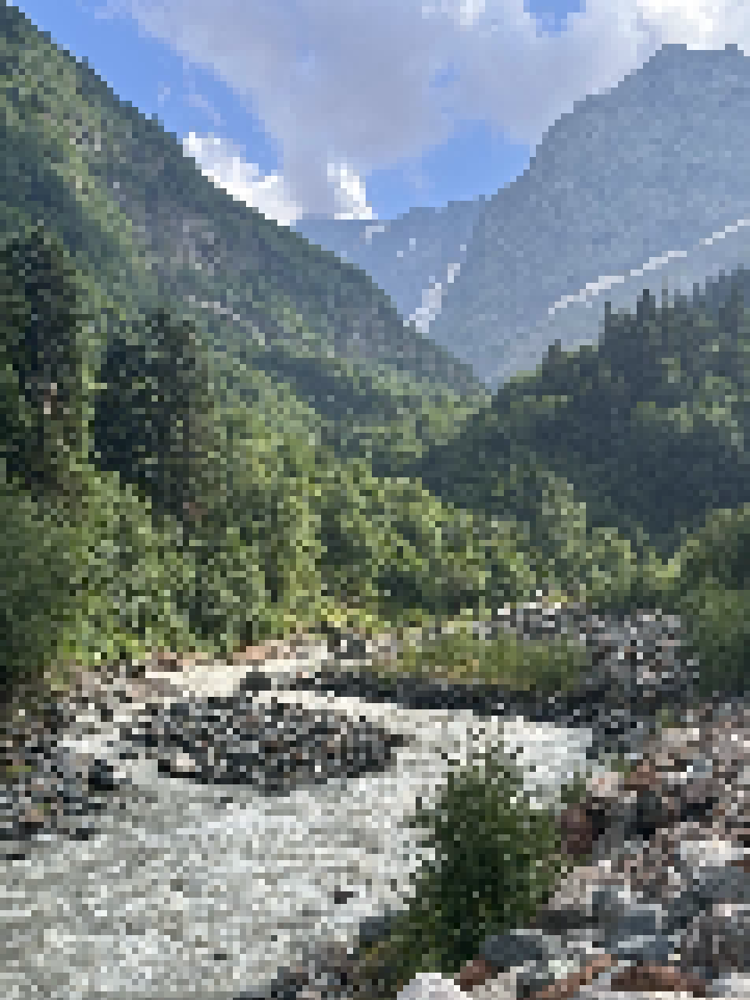

Фритрек и нулевой спринт: Подготовка к работе

<новый виток>
Это было самое начало пути. На этом этапе важно было проникнуться основами и настроиться на учёбу. И, возможно, подумать, как новые знания могут повлиять на ваше будущее.
Моя вторая попытка начать обучение. Был настрой в этот раз закончить все до конца.